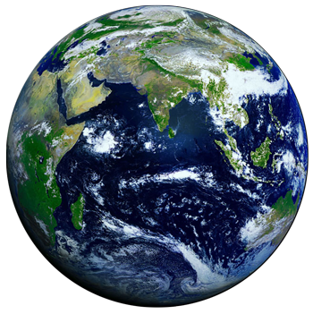

Earth - Our Planet
Earth is the third planet from the Sun and the only astronomical object known to harbor life. According to radiometric dating estimation and other evidence, Earth formed over 4.5 billion years ago. Earth's gravity interacts with other objects in space, especially the Sun and the Moon, which is Earth's only natural satellite. Earth orbits around the Sun in 365.256 solar days, a period known as an Earth sidereal year. During this time, Earth rotates about its axis 366.256 times, that is, a sidereal year has 366.256 sidereal days.70% of the Earth’s surface is covered in water.When astronauts first went into the space, they looked back at the Earth with human eyes for the first time, and called our home the Blue Planet.

Earth Planet Profile
- Equatorial Diameter: 12,756 km
- Polar Diameter: 12,714 km
- Mass: 5.97 × 10^24 kg
- Moons: 1 (The Moon)
- Orbit Distance: 149,598,262 km (1 AU)
- Orbit Period: 365.24 days
- Surface Temperature:-88 to 58°C
Top Facts about Earth
- The Earth’s rotation is gradually slowing.
- The Earth was once believed to be the centre of the universe.
- Earth has a powerful magnetic field.
- There is only one natural satellite of the planet Earth
- Earth is the only planet not named after a god.
- The Earth is the densest planet in the Solar System.
Some More Facts
- 70% of the Earth’s surface is covered in water.When astronauts first went into the space, they looked back at the Earth with human eyes for the first time, and called our home the Blue Planet. And it’s no surprise. 70% of our planet is covered with oceans. The remaining 30% is the solid ground, rising above sea level.
- Earth doesn’t take 24 hours to rotate on its axis
It’s actually 23 hours, 56 minutes and 4 seconds. This is the amount of time it takes for the Earth to completely rotate around its axis; astronomers call this a sidereal day. Now wait a second, that means a day is 4 minutes shorter than we think it is. You’d think that time would add up, day by day, and within a few months, day would be night, and night would be day.
- A year on Earth isn’t 365 days
It’s actually 365.2564 days. It’s this extra .2564 days that creates the need for leap years. That’s why we tack on an extra day in February every year divisible by 4 – 2004, 2008, etc – unless it’s divisible by 100 (1900, 2100, etc)… unless it’s divisible by 400 (1600, 2000, etc).
-
The Earth is not actually round in shape; in fact it is geoid. This simply means that the rounded shape has a slight bulge towards the equator. So what causes this geoid shape? This happens solely because the rotation of the Earth which causes the bulge around the equator.
-
Earth has 1 moon and 2 co-orbital satellites
As you’re probably aware, Earth has 1 moon (The Moon). But did you know there are 2 additional asteroids locked into a co-orbital orbits with Earth? They’re called 3753 Cruithne and 2002 AA29. We won’t go into too much detail about the Moon, I’m sure you’ve heard all about it.